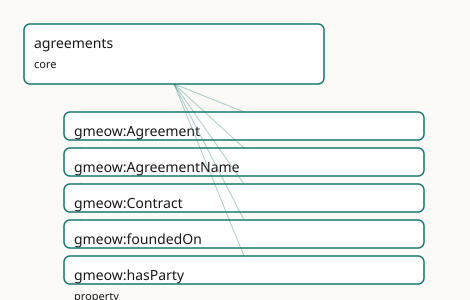

GMEOW Agreements Module
- IRI: https://blackcatinformatics.ca/gmeow/slices/agreements
- Tier: core
Group: core
What This Slice Covers
This slice owns 5 terms and contributes 1 mapping or projection rows. Use it when its terms match the native fact you want to preserve; use the linkage tables to see how those facts leave GMEOW for consumer vocabularies.
Dependencies
Consumers
- Licences-as-agreements (rights), employment terms, and calendar RSVPs.
Local Map

Examples
Employment Contract
- Source:
slices/core/agreements/examples/employment-contract.ttl - GMEOW terms:
gmeow:Agreement,gmeow:AgreementName,gmeow:Contract,gmeow:Membership,gmeow:Organization,gmeow:Person,gmeow:foundedOn,gmeow:fullName,gmeow:hasAgreementName,gmeow:hasParty - External prefixes:
gufo
# SPDX-FileCopyrightText: 2026 Blackcat Informatics® Inc. <paudley@blackcatinformatics.ca>
# SPDX-License-Identifier: CC-BY-4.0
#
# Worked example: an agreement as a relator . A gmeow:Agreement (here a
# gmeow:Contract, the legally-enforceable specialization) is a gufo:Relator that
# binds its parties via gmeow:hasParty — the agreement IS the relationship, not a
# property of either party. It bears a structured gmeow:AgreementName (an
# Appellation, so multilingual co-equal titles are first-class). Other relators
# can be gmeow:foundedOn it: the employment Membership below exists BECAUSE of the
# contract, so its grounding is recorded rather than assumed.
@prefix gmeow: <https://blackcatinformatics.ca/gmeow/> .
@prefix ex: <https://blackcatinformatics.ca/gmeow/examples/agreements/> .
ex:acme a gmeow:Organization ; gmeow:name "Acme Robotics Inc."@en .
ex:dana a gmeow:Person ; gmeow:name "Dana Reyes"@en .
# --- The contract: a relator binding the two parties, bearing a formal name.
# (Validity bounds — gmeow:validFrom/validUntil — are statement-level RDF-1.2
# annotations, carried in the statement layer rather than as A-box triples.)
ex:contract a gmeow:Contract ;
gmeow:hasParty ex:acme , ex:dana ;
gmeow:hasAgreementName ex:contractName .
ex:contractName a gmeow:AgreementName ;
gmeow:fullName "Acme Robotics — Reyes Employment Agreement (2026)"@en .
# --- The employment Membership is FOUNDED ON the contract: it exists because of
# it, so the grounding relator points at the agreement rather than assuming it.
ex:employment a gmeow:Membership ;
gmeow:membershipMember ex:dana ;
gmeow:membershipOrganization ex:acme ;
gmeow:foundedOn ex:contract .
Terms
Classes
| Term | Label | Definition |
|---|---|---|
gmeow:Agreement |
Agreement | A mutual understanding between two or more agents that creates obligations or rights, reified as a relator connecting its parties. |
gmeow:AgreementName |
Agreement Name | An appellation borne by an agreement — a formal title, short name, or multilingual version of a contract or legal instrument. Carries its own gmeow:nameLanguag... |
gmeow:Contract |
Contract | A legally enforceable agreement. |
Properties
| Term | Label | Definition |
|---|---|---|
gmeow:foundedOn |
founded on | The agreement or contract that grounds this relator — in UFO terms, the set of commitments on which the relator is founded. Reusable across any relator (Member... |
gmeow:hasParty |
has party | Relates an agreement to an agent that is bound by it. |
Linkages
- Rows: 1
- Projection profiles: -
- External vocabularies:
schema
| Source | Kind | Profile | Predicate/Relation | Target | Evidence |
|---|---|---|---|---|---|
gmeow:AgreementName |
equivalence | - |
skos:broadMatch | schema:name | gmeow-names.sssom.tsv; gmeow:eqNames052; confidence 0.6 |
Guide
Agreements — the relator that grounds every binding
Slice:
https://blackcatinformatics.ca/gmeow/slices/agreements· tier: core Mutual understandings reified as relators — and thefoundedOnhook that lets every other relator say why it binds.
A flat partyA contractsWith partyB triple cannot carry a date, a clause, a name, or a
dispute. GMEOW therefore models an agreement the way UFO says it should be modelled: as a
relator (gufo:Relator) — a first-class truthmaker that binds its parties rather than
a predicate that merely connects them. The agreement node owns its identity, its
appellations, its temporal scope (statement-layer clocks), and its provenance; the parties
hang off it via gmeow:hasParty.
The slice is deliberately small because its real surface is everything else: in UFO, a
relator is founded on a set of commitments, and gmeow:foundedOn makes that foundation
explicit and reusable. A Membership, a KinRelationship by adoption, an employment
tenure, a licence — any relator anywhere in the graph can declare the agreement that grounds
it, instead of duplicating contractual structure per slice. Legal enforceability is a
specialization, not a property flag: gmeow:Contract is the SubKind for agreements a
legal system will enforce, and the handshake deal stays an honest gmeow:Agreement.
The relator core
gmeow:Agreement
A mutual understanding between two or more agents that creates obligations or rights,
reified as a gufo:Kind relator connecting its parties. Anything from a treaty to a verbal
promise; when the terms themselves need deontic structure, link a RightsStatement (rights
slice) rather than widening this class.
gmeow:Contract
The legally enforceable SubKind of gmeow:Agreement. Enforceability is the identity-bearing
distinction — not a boolean on Agreement — so contract-specific machinery (governing law,
execution, breach events) has a typed home without burdening informal agreements.
gmeow:hasParty
Binds the agreement to each gmeow:Agent it obligates. Non-functional and repeated: one
statement per party, any arity. Roles within the agreement (licensor/licensee,
employer/employee) belong to the consuming relator or a Participation, not to new
subproperties here.
gmeow:AgreementName
An gmeow:Appellation SubKind for the formal title, short name, or multilingual version of
an instrument ("CETA", "Comprehensive Economic and Trade Agreement"). Each name is a
first-class object carrying its own gmeow:nameLanguage and gmeow:nameScript, so co-equal
multilingual names coexist instead of fighting over one literal (Principle 9 — no
primaryName).
gmeow:foundedOn
The cross-cutting hook: any gufo:Relator → the gmeow:Agreement that grounds it — UFO's
foundation-on-commitments made a queryable edge. This is how licences-as-agreements (rights
slice), employment terms, and calendar RSVPs all resolve to one contractual spine instead of
three parallel ones.
Worked shape
ex:ceta a gmeow:Contract ;
gmeow:hasParty ex:canada, ex:europeanUnion ;
gmeow:hasAppellation ex:cetaShortName .
ex:membership-ca-ceta a gmeow:Membership ;
gmeow:foundedOn ex:ceta .
The membership relator carries the tenure; the contract carries the binding; neither duplicates the other.
Solver layer & deferred alignment
The ontology asserts who is bound and on what foundation — nothing more. Obligation
fulfillment, breach detection, term expiry, and clause interpretation are solver-layer
computations over the relator plus its rights statements and statement-layer clocks
(Principle 12); the graph never carries an isInBreach flag for the same reason the
deception slice carries no isFalse. No mapping profile ships yet: alignment by reference
(schema.org's agreement-adjacent terms, FIBO contracts) is deliberately deferred to the
alignment window, where it lands as SSSOM rows rather than imported axioms.
Dependencies
Depends on kernel (Agent, the relator grounding) and names (Appellation, for
AgreementName). Consumed by rights (licences are agreements), employment (terms of
engagement), and calendar (RSVPs as lightweight agreements) — each via gmeow:foundedOn,
never by re-modelling the contract.